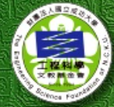

Home
|
Latest News
|
Faculty
|
Specilty
|
Development plans
|
Links
|
Location
Sitemaps
|
Sign up
|
中文
Links
<--Click here to see more information about NCKU

<--Welcome back home alumni
<--subscibe our facebook
<--Daily routine of us on instagram
Other relative websites
For Seinior High School Students
Unews
collego
Department/Institute curriculum
Introduction of our beautiful toilet.
Bachelor/li>
Course information and enrollment system
Cheng-Kung portal
I really really want to graduate.
中文